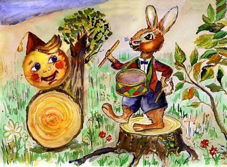
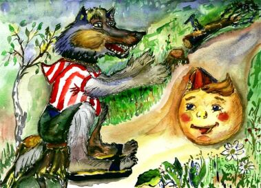
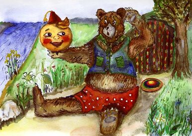
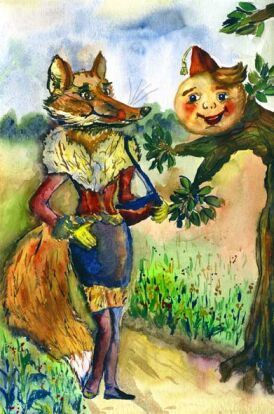

Жили-были старик со старухой. Вот и говорит старик старухе:
- Поди-ка, старуха, по коробу поскреби, по сусеку помети, не наскребешь ли муки на колобок.
Взяла старуха крылышко, по коробу поскребла, по сусеку помела и наскребла муки горсти две. Замесила муку на сметане , состряпала колобок,изжарила в масле и на окошко студить положила
| № | Исходное место | Действие | Цель |
|---|---|---|---|
| 1 | Окно | Скатиться | Лавка |
| 2 | Лавка | Скатиться | Пол |
| 3 | Пол | Покатиться | Дверь |
| 4 | Дверь | Перепрыгнуть порог | Сени |
| 5 | Сени | Покатиться | Крыльцо |
| 6 | Крыльцо | Скатиться | Двор |
| 7 | Двор | Покатиться | Ворота |
| 8 | Ворота | Покатиться | Куда глаза глядят |
Колобок полежал, полежал, взял да и покатился - с окна на лавку, с лавки на пол, по полу к двери, прыг через порог - да в сени, из сеней на крыльцо, с крыльца на двор, со двора за ворота, дальше и дальше. Катится колобок по дороге, навстречу ему заяц:

- Колобок, колобок, я тебя съем!
- Не ешь меня, заяц, я тебе песенку спою:
Я колобок, колобок,
Я по коробу скребен,
По сусеку метен,
На сметане мешонДа в масле пряжон,
На окошке стужон.
Я от дедушки ушел,
Я от бабушки ушел,
От тебя, зайца, подавно уйду!
И покатился по дороге - только заяц его и видел! Катится колобок, навстречу ему волк:

- Колобок, колобок, я тебя съем!
- Не ешь меня, Серый волк, я тебе песенку спою:
Я колобок, колобок,
Я по коробу скребен,
По сусеку метен,
На сметане мешон
Да в масле пряжон,
На окошке стужон.
Я от дедушки ушел,
Я от бабушки ушел,
Я от зайца ушёл
От тебя волк и подавно уйду!
И покатился по дороге - только волк его и видел! Катится колобок, навстречу ему медведь:
- Колобок, колобок, я тебя съем!
- Где тебе, косолапому, съесть меня!
Я колобок, колобок,
Я по коробу скребен,
По сусеку метен,
На сметане мешон
Да в масле пряжон,
На окошке стужон.
Я от дедушки ушел,
Я от бабушки ушел,
Я от зайца ушел,
Я от волка ушел,
От тебя, медведь, подавно уйду!
И опять покатился - только медведь его и видел! Катится колобок, навстречу ему лиса:

- Колобок, колобок, куда катишься?
- Качусь по дорожке.- Качусь по дорожке.
- Колобок, колобок, спой мне песенку!
Колобок и запел:
Я колобок, колобок,
Я по коробу скребен,
По сусеку метен,
На сметане мешон
Да в масле пряжон,
На окошке стужон.
Я от дедушки ушел,
Я от бабушки ушел,
Я от зайца ушел,
Я от волка ушел,
От Медведя ушел,
От тебя, лисы, нехитро уйти
А лиса говорит:
- Ах, песенка хороша, да слышу я плохо. колобок, колобок, сядь ко мне на носок да спой еще разок, погромче.
Колобок вскочил лисе на нос и запел погромче ту же песенку. А лиса опять ему:
- Колобок, колобок, сядь ко мне на язычок да пропой в последний разок. - Колобок, колобок, сядь ко мне на язычок да пропой в последний разок.
Колобок прыг лисе на язык, а лиса его - гам! - и съела.